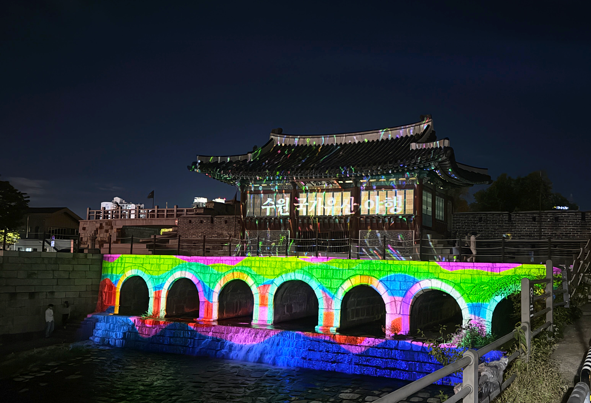
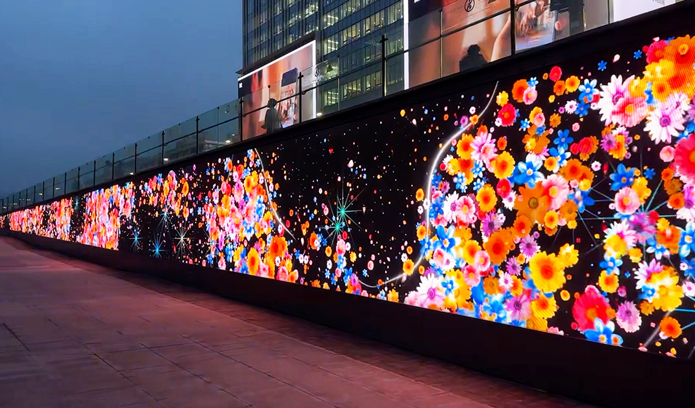

LAB OE
KIM YOUNG TAE
exhibition designer & media artist
SCROLL
DESIGN PHILOSOPHY
익숙함에 낯선 경험
일상적 무심한 요소에 시각적 인상을 심어 익숙하지만 낯선 느낌을 경험하게 만듭니다.
[사물] + [빛]을 주제로 비물리적 조형 요소와 미디어 매체를 결합한 콘텐츠 작품을 진행하고 있는
미디어 아트 그룹LAB OE입니다.
공간
다양성
感興
inspiration
inspiration
審美性
aesthetic
aesthetic
Exhibition Design Media Art
MEDIA ART EXHIBITIONS
- 2026‘2026 수원 국가유산 야행’ 화홍문 미디어아트 전시
수원, 한국
- 2026‘2026 해치마당 미디어월 봄 전시’ 전문작가 기획전 전시
서울, 한국
- 2025‘2025 서울라이트 광화문’ 세종 파빌리온 초청작가 및 전시
서울, 한국
- 2025‘2025 수원화성 미디어아트’ 전시 참여작가 및 전시
수원, 한국
- 2025VIDO SUMMER : 장면의 잔상들 전시
서울, 한국
- 2025‘2025 아뜰리에 광화 봄’ 전시 참여작가 및 전시
서울, 한국
- 2025‘2025 화성행궁 야간개장 <달빛화담, 花谈>’, 미디어아트 전시
수원, 한국
- 2024‘2024 국가유산 미디어아트 수원화성’ 참여작가 및 전시
수원, 한국
- 2024강원랜드 미디어 월/스크린 제작 참여작가 및 전시
정선군, 한국
- 2023전북아트플랫폼 <낙서창고 井> 미디어아트 선정 및 전시
정읍, 한국 - 2023수원화성 미디어아트전 참여작가 및 전시
수원, 한국
- 2023강릉대도호부관아 문화유산 미디어아트 참여작가 및 전시
강릉, 한국
- 2022부산 유라시아플랫폼 미디어아트 공모 선정 및 전시
부산, 한국
- 2022서울시-KT 광화문광장 미디어아트 공모 선정 및 전시
서울, 한국
- 2021‘서울로 미디어 캔버스 네이쳐 프로젝트’ 선정 및 전시
서울, 한국 - 2020화려한 빛으로의 초대전 참여 작가
대구, 한국 - 2019'남원 사운드 페스티벌 2019' 전시
남원, 한국 - 2018‘수원야행’ 미디어파사드 전시
수원, 한국
- 2017제10회 청주공예비엔날레 기획전 전시
청주, 한국
MUSEUM & EXHIBITION SPACE DESIGN


AWARDS
- 2025제6회 서울대학교병원 멀티시네마월 영상작품 공모 선정
(최우수상) - 2022부산 유라시아플랫폼 미디어아트 공모 선정
(장려상) - 2022서울시-KT 광화문광장 미디어아트 공모 선정
(장려상)
EDUCATION
- 2026홍익대학교 일반대학원 디자인공예학과(공간디자인학) 박사 과정
- 2006홍익대학교 일반대학원 공간디자인 졸업 _ 미술학 석사
- 2004한남대학교 건축공학과 졸업 _ 공학사